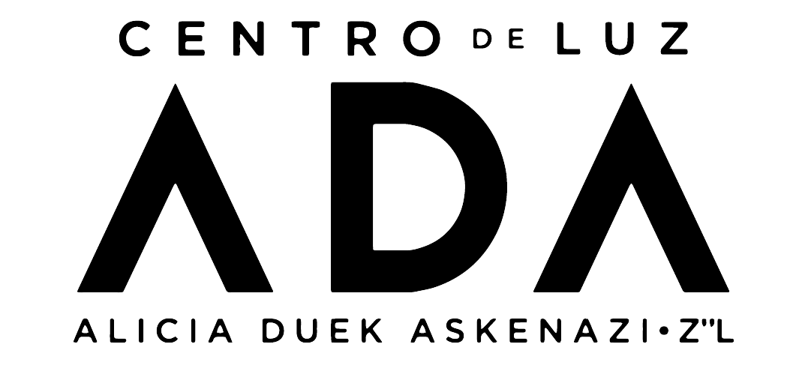
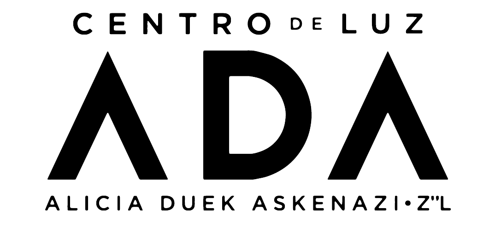
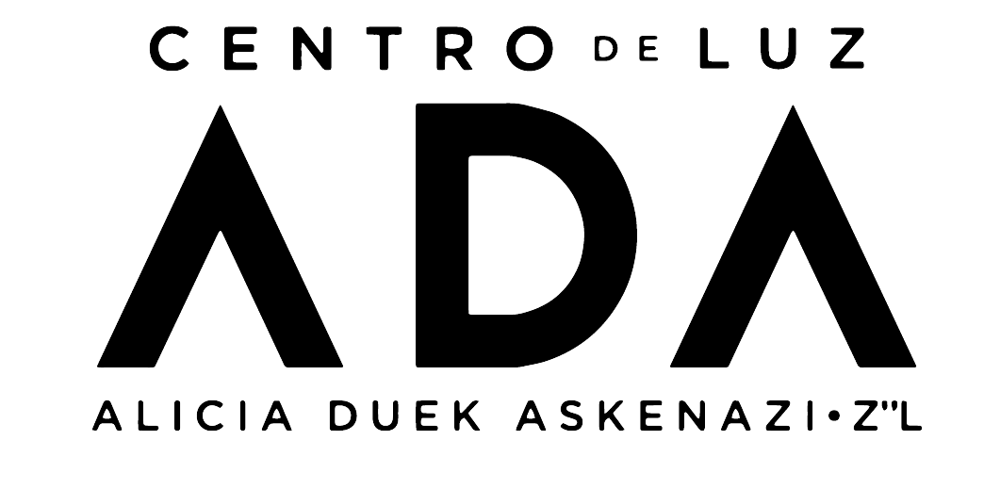

La salud mental es importante dentro y fuera del espacio laboral, es por eso que te compartimos este compilado de instituciones que brindan atención psicológica:

La salud mental es importante dentro y fuera del espacio laboral, es por eso que te compartimos este compilado de instituciones que brindan atención psicológica:
| Institución | Modalidad/Dirección | Horario/Contacto |
|---|---|---|
| INSTITUTO POLITECNICO NACIONAL CAPPSI (CENTRO ATENCIÓN Y PREVENCIÓN PSICOLÓGICA) | PRESENCIAL AV. DE LOS MAESTROS, SANTO TOMÁS, MIGUEL HIDALGO, 11340 CIUDAD DE MÉXICO, CDMX NO SE AGENDAN CITAS VÍA TELEFÓNICA. |
|
| SAPTEL (SISTEMA NACIONAL DE APOYO, CONSEJO PSICOLÓGICO E INTERVENCIÓN EN CRISIS POR TELÉFONO) | A DISTANCIA ES VÍA TELEFÓNICA GRATUITA EN MÉXICO |
|
| CENTRO DE TERAPIA DE APOYO A VICTIMAS DE DELITOS SEXUALES GOBIERNO DE LA CIUDAD DE MÉXICO |
PRESENCIAL ENRIQUE PESTALOZZI #1115, COL. DEL VALLE, C.P. 03100, ALCALDÍA BENITO JUÁREZ. |
|
| FACULTAD DE MEDICINA UNAM DEPARTAMENTO DE PSIQUIATRÍA Y SALUD MENTAL | CIRCUITO INTERIOR Y CERRO DEL AGUA. FACULTAD DE MEDICINA, EDIFICIO F. | Teléfono: 55 5623 2127 |
| SALUD MENTAL DE ATENCIÓN PSICOLÓGICA A DISTANCIA | UNIVERSIDAD 3000, CIUDAD UNIVERSITARIA. (A DOS CUADRAS DE METRO COPILCO) | |
| MARCA MAYBELLINE Y FUNDACIÓN ORIGEN | CREO UNA LÍNEA DE APOYO GRATUITA Y EN MODALIDAD A DISTANCIA |
|
| INSTITUTO MEXICANO DE PSICOANÁLISIS, A.C. FUNDADO POR ERICH FROMM | ODONTOLOGÍA 9, COL. COPILCO UNIVERSIDAD |
|
| CENTRO INTEGRAL DE SALUD MENTAL (CISAME) | PRESENCIAL y A DISTANCIA PERIFÉRICO SUR 2905, COL. SAN JERÓNIMO LÍDICE, ALCALDÍA MAGDALENA CONTRERAS |
|
| ASOCIACIÓN PSICOANALÍTICA MEXICANA | A DISTANCIA |
|
| CLÍNICA DE ATENCIÓN PSICOLÓGICA INTEGRAL (CAPI) | PRESENCIAL y A DISTANCIA |
|
| Instituto Mexicano de Psicoanálisis | Citas: Establecer contacto con la Clínica del IMPAC vía telefónica, o bien, acudir directamente a las instalaciones en Odontología 9, Col. Copilco Universidad. Costo: $350.00 (MXN) |
|